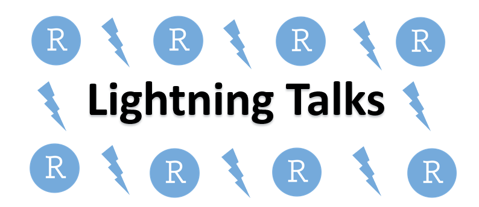
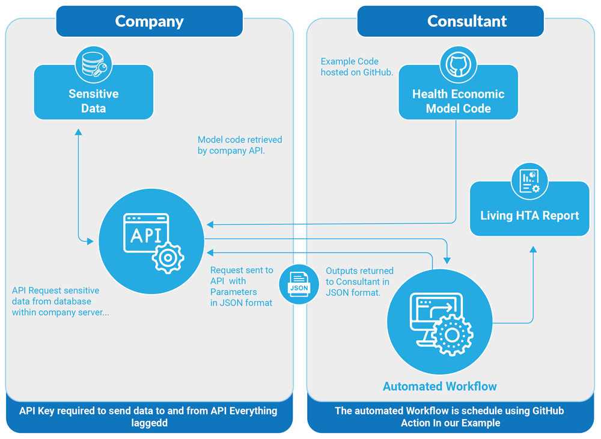
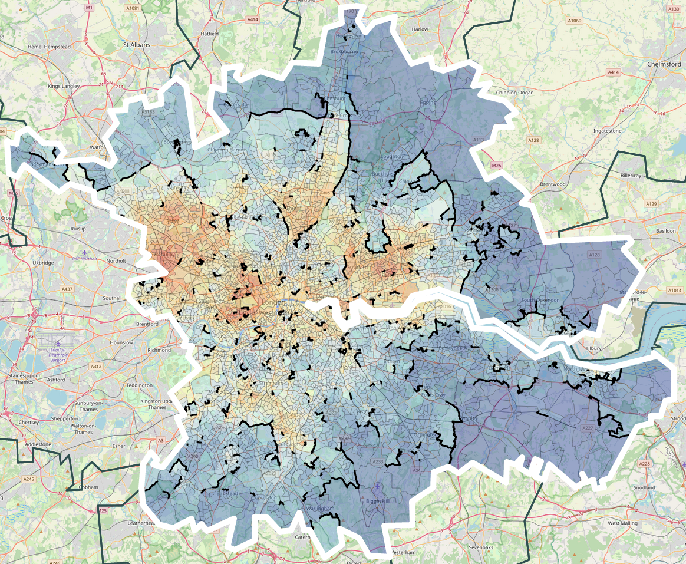

SheffieldR
About
Sponsors
Resources
Slides
Code of Conduct
SheffieldR
Categories
All
(29)
hack
(2)
meetups
(27)

SheffieldR : June 2024 Meetup
meetups
This month, we’re shaking things up with an exciting line-up of lightning talks presented by you, our vibrant community members! This is your chance to share your knowledge…
Jun 21, 2024
SheffieldR : April 2024 Meetup
meetups
Join us for the April edition of SheffieldR User Group, where we continue to explore the exciting world of R programming and its applications. This month, we’re thrilled to…
Apr 22, 2024
SheffieldR : Bring your Data and Code
meetups
This March meetup see’s a slight deviation from the normal format of the SheffieldR meetups as we are inviting you to bring your data, code, R knowledge and enthusiasm along…
Mar 21, 2024
SheffieldR : February 2024 Meetup
meetups
Apologies for the short notice but thanks to Simon Rolph, who has volunteered to give a talk, we have scheduled a meeting for February.
Feb 15, 2024

SheffieldR : January 2024 Meetup
meetups
SheffieldR User Group is back in January 2024 with a Health Economics special and two talks from Robert Smith and Wael Mohammed of Dark Peak Analytics and the University of…
Jan 18, 2024

SheffieldR : November Meetup
meetups
After October’s Reboot, we are back with another Meetup this 20th November for a showcase using Shiny to illuminate the power of data-driven insights. Join us as we delve…
Nov 20, 2023
SheffieldR Reboot : Quarto for slides
meetups
After a long hiatus SheffieldR User Group is back and we’ll be starting things off by looking at the new document preparation system Quarto and how to use it with GitHub to…
Oct 26, 2023
rrtools: Tools for Writing Reproducible Research in R
meetups
NOTE: Because of the Easter holidays April’s meetup will be on the 2nd Tue of the month.
Apr 10, 2018
Docker and Interactive unit testing
meetups
In this month’s meetup, Mark Dunning will give a general introduction to the Docker container platform and Phil Mike Jones will introduce strategies for interactive unit…
Mar 6, 2018
Stan and the Tidyverse
meetups
Welcome back to the Sheffield R Meetup! We’re kicking off 2018 with two great talks:
Feb 6, 2018
R coding social
meetups
In the run up to the festive season we’d like to invite Sheffield R users to come and join us for an R coding social! Come along for a chance to meet and greet fellow R…
Dec 5, 2017
Managing projects with workflowr and Introduction to DiagrammeR
meetups
We’re back to our regular schedule after last month’s Hacktoberfest fun. Join us for talks on managing your projects with workflowr and a brief introduction to the…
Nov 7, 2017
Celebrating Hacktoberfest… #rstats style!
meetups
We’ll be following up our introductory
Celebrating Hacktoberfest
session with drop-in sessions throughout October, so do join us if you’d like to get involved or learn more…
Oct 3, 2017
September Sheffield R Meetup: Object oriented systems in R + The Reproducible Thesis w/ Bookdown
meetups
We’ve got an exciting pair of talks for you this month!
Sep 5, 2017
July Sheffield R Meetup: Thermal images and Object oriented systems in R
meetups
We’ve got two great talks lined up for our last meeting before the summer break.
Jul 4, 2017
June Sheffield R Meetup: Literate programming and Writing a decision tree package for R
meetups
This month Anna Krystalli will present a exploration of literate programming, following up from a discussion on literate programming techniques at our meetup in April, and…
Jun 6, 2017
May Sheffield R Meetup: Making R Faster
meetups
This month we’ll be learning from Théo Michelot how to make R go faster using a couple of techniques.
May 2, 2017
April Sheffield R Meetup: Using R Notebooks and Ensembles in Machine Learning
meetups
This month’s talks cover ensembles in machine learning and using R notebooks as a learning tool.
Apr 4, 2017
March Sheffield R Meetup: Code surgery and social
meetups
In March we held our first R coding surgery and social, a chance for our members to meet, greet, learn from and collaborate with fellow R users.
Mar 7, 2017
February Sheffield R Meetup: Martin Garlovsky and Christopher Hopkinson
meetups
In this month’s meeting we’ll explore survival analysis, a means of analysing data in which the outcome is the time to the occurrence of an event of interest. We’ll also be…
Feb 1, 2017
December Sheffield R Meetup: Dan Olner, James Waterhouse and Darrell Taylor
meetups
This month we’ll be learning about R’s capabilities for wrangling and handling spatial data and how Sky Betting and Gaming does data science.
Nov 16, 2016
November Sheffield R Meetup: Shaun Coutts and Lukas Drapal
meetups
At this month’s meeting we’ll be talking about modelling, inference, and prediction.
Oct 21, 2016
October Sheffield R Meetup: Mathew Hall and Mike Croucher
meetups
At this month’s meeting we’ll be talking about how R interacts with different languages and technologies.
Sep 17, 2016
September Sheffield R Meetup: Alison Parton and Jeremy Oakley
meetups
After the summer break, Sheffield R group is back with a couple of great talks to kick off the new season.
Aug 17, 2016
NBN Hack Results
hack
In March we ran a series of hack events centred around the National Biodiversity Network’s data gateway. We teamed up with Sheffield Wildlife Trust to investigate the data…
May 20, 2016
National Biodiversity Hack Event
hack
We’re running a hackathon event over three sessions in March. The hack will focus on the National Biodiversity Network’s data to collaboratively develop outputs that benefit…
Jan 27, 2016
January Sheffield R Meetup: Happy New-ish YeaR!
meetups
This month we will be talking in more detail about our upcoming NBN Biodiversity Hack event, which will be held over the first 3 weeks of March. Paul and Anna will share…
Jan 26, 2016
November Sheffield R Meetup: Matt Aldridge
meetups
This month we are delighted to welcome a guest speaker Matt Aldridge from Mango Solutions - a company which specialises in data analysis/science, training and consultancy…
Nov 24, 2015
October Sheffield R Meetup: Git, GitHub, and Shiny apps
meetups
This month we will be taking a look at integrating git and github use with R. Git is a great tool to help you manage your code using version control - helping avoid that…
Oct 27, 2015
No matching items